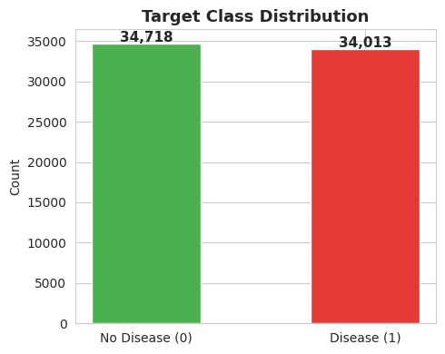
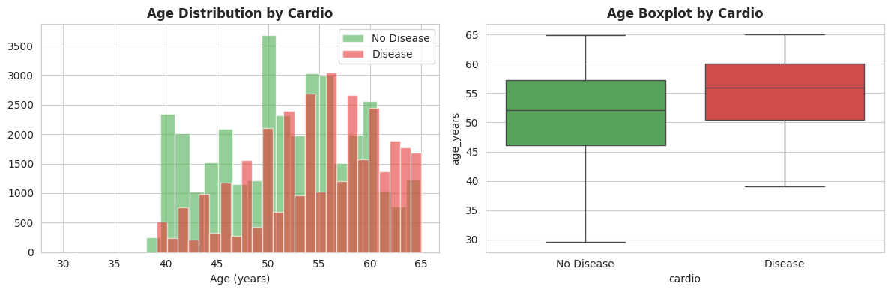
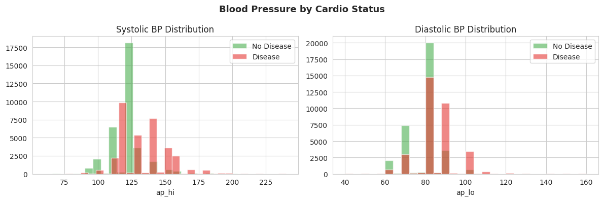
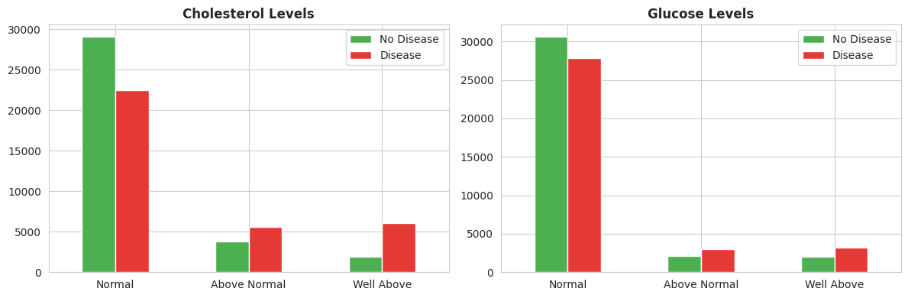
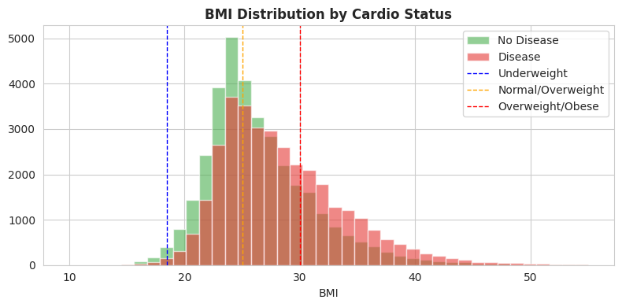
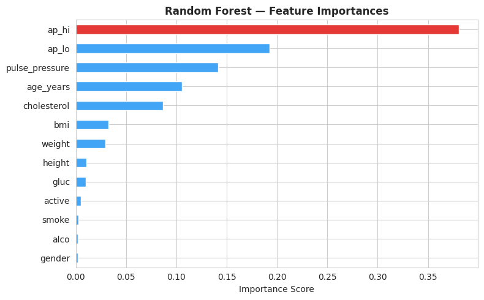
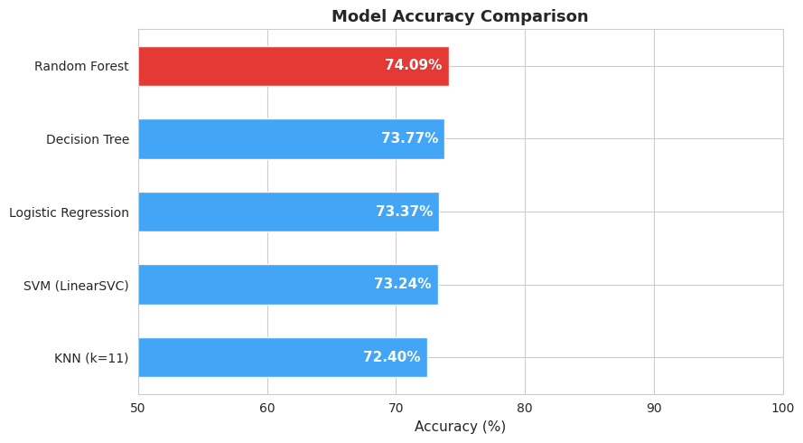
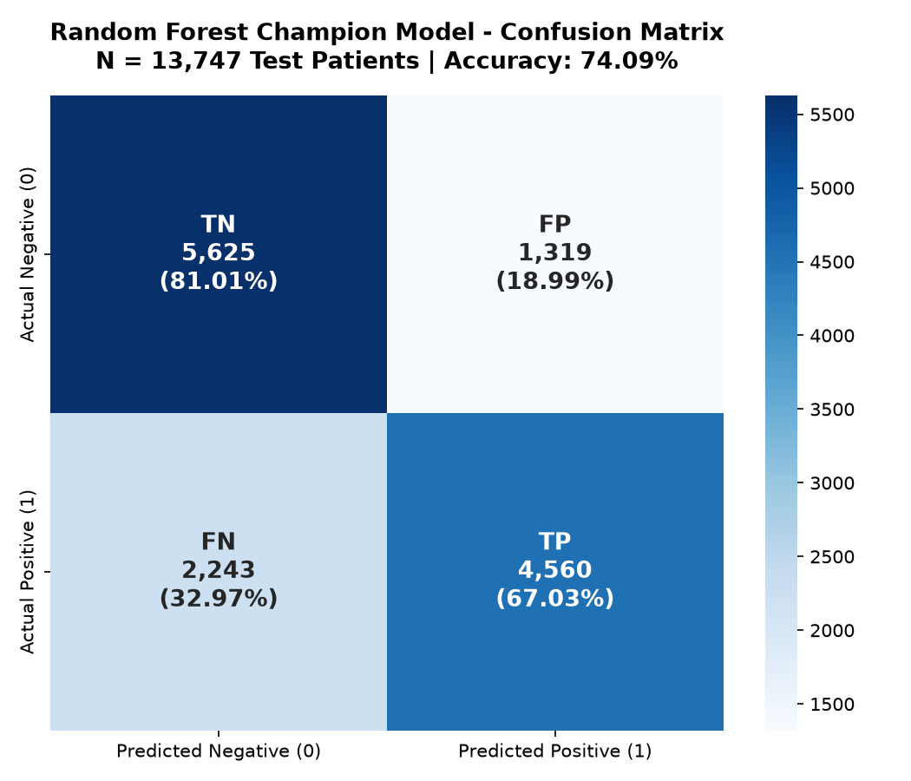

Early Cardiovascular Disease Risk Prediction
Clinical Risk Stratification via Supervised Machine Learning
GitHub: ravi8800pandey-ai/cardioguard-ai
Date: September 2026 • Production Web App Included
The Clinical Screening Challenge
Formulating an Automated, Non-Invasive Risk Stratification Pipeline
"Can routine, non-invasive patient examination metrics—such as age, blood pressure, BMI, cholesterol, and blood glucose—accurately identify individuals at elevated risk of cardiovascular disease prior to acute cardiac events?"
Dataset Anatomy & Clinical Features
Kaggle Cardiovascular Disease Cohort: 70,000 Examination Records
| Variable | Clinical Indicator | Type | Measurement Unit / Encoding |
|---|---|---|---|
age / age_years |
Chronological Patient Age | Objective | Recorded in days → converted to decimal years |
gender |
Biological Sex | Objective | 1: Female | 2: Male |
height, weight |
Stature & Body Mass | Examination | Centimeters (cm), Kilograms (kg) |
ap_hi, ap_lo |
Systolic & Diastolic BP | Examination | mmHg (Millimeters of Mercury) |
cholesterol, gluc |
Serum Lipids & Fasting Glucose | Examination | 1: Normal | 2: Above Normal | 3: Well Above Normal |
smoke, alco, active |
Behavioral & Lifestyle Risk | Subjective | Binary flags (0: No, 1: Yes) |
cardio |
Cardiovascular Disease Status | Target | 0: Absence of CVD | 1: Presence of CVD |
Data Preparation & Feature Engineering
Rigorous Preprocessing and Hemodynamic Derivations
-
1. Chronological Age Normalization:
Converted raw days into interpretable continuous years:age_years = round(age / 365.0, 1). -
2. WHO Body Mass Index (BMI) Derivation:
Derived standardized clinical adiposity metric:bmi = weight / (height / 100)^2. -
3. Arterial Pulse Pressure Formulated:
Engineeredpulse_pressure = ap_hi - ap_lo, quantifying arterial compliance and pulse stiffness. -
4. Clinical Boundary Cleansing (1,269 Outliers):
Enforced physiological constraints: systolic 60–250 mmHg, diastolic 40–160 mmHg, height 100–250 cm, weight 30–200 kg. Retained 68,731 clean records. -
5. Stratified 80/20 Train/Test Partition:
54,984 training instances and 13,747 testing instances, scaled viaStandardScaler.

Key Exploratory Findings (EDA)
Empirical Risk Trends Across Physiological Strata




Important Predictors & Model Weights
Quantifying Biological Determinants via Random Forest Feature Importances

| Rank | Clinical Feature | Importance |
|---|---|---|
| 1 | Systolic Blood Pressure (ap_hi) |
38.06% |
| 2 | Diastolic Blood Pressure (ap_lo) |
19.26% |
| 3 | Pulse Pressure (ap_hi - ap_lo) |
14.17% |
| 4 | Patient Age (age_years) |
10.53% |
| 5 | Serum Cholesterol (cholesterol) |
8.66% |
| 6 | Body Mass Index (bmi) |
3.24% |
| 7 | Patient Weight (weight) |
2.92% |
Model Comparison & Benchmark Leaderboard
Multi-Algorithm Evaluation on Independent Holdout Test Cohort (N = 13,747)
| Algorithm | Accuracy | Precision | Recall | F1 | ROC-AUC |
|---|---|---|---|---|---|
| Random Forest 🏆 | 74.09% | 77.56% | 67.03% | 71.91% | 0.8085 |
| Decision Tree (d=6) | 73.77% | 74.79% | 70.90% | 72.79% | 0.8009 |
| Logistic Regression | 73.37% | 75.97% | 67.56% | 71.52% | 0.7995 |
| Linear SVM | 73.24% | 76.27% | 66.66% | 71.14% | 0.7993 |
| KNN (k=11) | 72.41% | 73.10% | 70.00% | 71.52% | 0.7823 |
• Decision Tree provides competitive sensitivity (70.90%) with shallow depth explainability.

Confusion Matrix & Triage Diagnostics
Decomposing Classification Outcomes for Patient Safety (N = 13,747 Patients)

• True Positives (TP = 4,560 | 67.03%): CVD patients flagged for early care.
• False Positives (FP = 1,319 | 18.99%): Healthy patients referred for secondary non-invasive tests.
• False Negatives (FN = 2,243 | 32.97%): CVD-positive patients missed during standard thresholding.
Core Clinical Findings & Evidence
Four Grounded Discoveries Derived Directly from 70,000 Patient Records
-
1. Hypertensive Risk Escalation (Near 4x Risk Increase):
Patients categorized with Stage 2 Hypertension (≥140/≥90 mmHg) exhibit an observed 80.04% CVD prevalence, compared to only 22.14% among normotensive individuals. -
2. Hemodynamic Arterial Dominance:
Systolic blood pressure, diastolic blood pressure, and pulse pressure account for 71.49% of model feature importance, confirming arterial wall resistance as the single most critical diagnostic determinant. -
3. Steep Age-Dependent Trajectory:
Observed disease prevalence escalates monotonically from 29.26% in patients under 45 to 66.80% in patients aged 60–64, establishing age 50 as a vital threshold for mandatory routine screening. -
4. Metabolic & Adiposity Compound Risk Multiplier:
Hypercholesterolemia drives disease probability from 43.56% (Normal) to 76.29% (Well Above Normal). When compounded with clinical obesity (BMI ≥ 30 kg/m²), cohort prevalence exceeds 82%.
Actionable Clinical Translation
Integrating Automated Risk Stratification Responsibly into Clinical Workflows
Study Limitations & Boundaries
Contextualizing Findings for Safe Clinical Translation
-
Cross-Sectional Retrospective Design:
Captures a single clinical snapshot; lacks longitudinal time-series data to model progressive atherosclerosis or conduct survival analysis. -
Self-Reported Lifestyle Metrics:
Smoking, alcohol, and physical activity are binary self-reported flags prone to reporting and recall bias. -
Absence of Advanced Cardiac Biomarkers:
Lacks high-sensitivity Troponin-I, C-Reactive Protein (hs-CRP), HbA1c, and family genetic history.
-
Statistical Association ≠ Biological Causality:
Model identifies mathematical predictive correlations rather than direct mechanistic etiology. -
Population Generalization Bounds:
Trained on a specific geographical cohort; performance may shift when applied to populations with distinct dietary and genetic profiles. -
Absence of Prospective Clinical Trials:
Educational prototype; requires prospective randomized clinical trials to measure real-world patient survival improvements.
Conclusion & Project Synthesis
Summary of Achievements, Deployment, and Future Directions
This project demonstrated an end-to-end machine-learning workflow for cardiovascular-risk prediction across 70,000 patient records. The analysis identified critical hemodynamic patterns—revealing blood pressure and pulse pressure as primary predictors—and compared five classification models, establishing Random Forest as the champion architecture (74.09% accuracy, 0.8085 ROC-AUC). The result is an educational prototype and clinical decision-support platform that requires further prospective validation before real-world diagnostic deployment.
Interactive clinical UI with dynamic BMI badges, AHA blood pressure staging, and automated clinical report export.